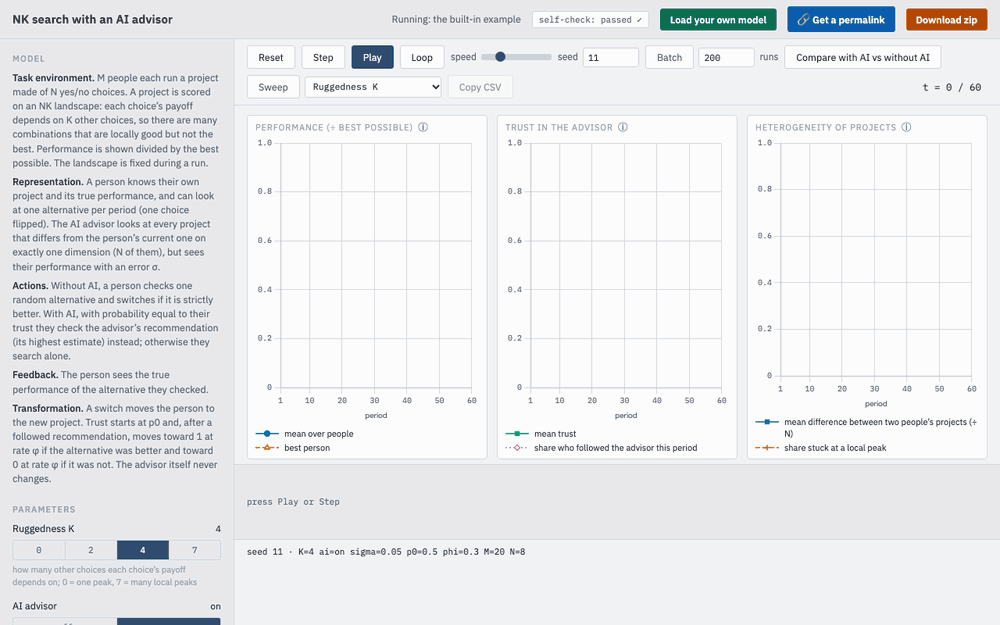

This tool turns a simulation you describe in plain words into a working model that runs in your web browser, where you can step through it, compare settings and download the results, with the help of any AI assistant.
Role of computational simulations in organizational learning research
Unlike a formal (economic) model, simulations allow for the agents to update their beliefs with every period, and act differently in the next one. Consequently, the value of computational simulations is generally to explore organizational learning, as it allows us to simulate what happens when agents update their perception of the world and actions in it over time, based on the feedback they receive.
Accordingly, all computational simulations follow a fairly standard format, as described in Puranam et al. (2015). The five questions below follow it. Anything you leave out, the AI assistant will set to a usual value and tell you what it chose.
Classroom suggestion: include an AI agent
Your model can be any model of organizational learning. We suggest including AI as an agent (or several agents) alongside the human agents. Consider what type of organizational context AI is used in, and how each type of agent is likely to interact with the others. If you include one, the explorer can run your model with the AI and without it, and overlay the two.
In the AI boxes, say:
- what the AI can see that a human cannot;
- how it decides or recommends;
- whether and how it can be wrong;
- how the human agents respond to it;
- whether it changes over time.
Usually the same human agents doing the same task alone, with everything else unchanged. Say so, or say what differs.
Outcome measures are automatically defined
Every explorer shows the same things over time: the performance of the system (how well the agents are doing at the task, averaged over agents), and, where it applies, the heterogeneity of the agents (how different they are from one another). With an AI agent, the assistant may add one chart about the AI itself (how many follow it, how accurate it is).
These are a starting point, not a limit. If you want to measure something else, or something more, say so to the AI assistant in the chat, before or after it writes your model, and it will change the charts.
This is not sent to the assistant, so it cannot shape the code. It is saved with your answers, so you can compare it with what you actually see.
References cited in the questions
Anjos, F., & Reagans, R. (2013). Commitment, learning, and alliance performance: A formal analysis using an agent-based network formation model. The Journal of Mathematical Sociology, 37(1), 1-23.
Denrell, J., Fang, C., & Levinthal, D. A. (2004). From T-mazes to labyrinths: Learning from model-based feedback. Management Science, 50(10), 1366-1378.
Denrell, J., & March, J. G. (2001). Adaptation as information restriction: The hot stove effect. Organization Science, 12(5), 523-538.
Fang, C., Lee, J., & Schilling, M. A. (2010). Balancing exploration and exploitation through structural design: The isolation of subgroups and organizational learning. Organization Science, 21(3), 625-642.
Knudsen, T., & Srikanth, K. (2014). Coordinated exploration: Organizing joint search by multiple specialists to overcome mutual confusion and joint myopia. Administrative Science Quarterly, 59(3), 409-441.
Koçak, Ö., Levinthal, D. A., & Puranam, P. (2023). The dual challenge of search and coordination for organizational adaptation: How structures of influence matter. Organization Science, 34(2), 851-869.
Levinthal, D. A. (1997). Adaptation on rugged landscapes. Management Science, 43(7), 934-950.
Levinthal, D. A., & Workiewicz, M. (2018). When two bosses are better than one: Nearly decomposable systems and organizational adaptation. Organization Science, 29(2), 207-224.
March, J. G. (1991). Exploration and exploitation in organizational learning. Organization Science, 2(1), 71-87.
Puranam, P., Stieglitz, N., Osman, M., & Pillutla, M. M. (2015). Modelling bounded rationality in organizations: Progress and prospects. Academy of Management Annals, 9(1), 337-392.
Rivkin, J. W., & Siggelkow, N. (2003). Balancing search and stability: Interdependencies among elements of organizational design. Management Science, 49(3), 290-311.
Build it and run it online
One download, a short conversation with an AI assistant, then you paste what it writes into the explorer. Nothing to install and no folder to set up: it all happens in your web browser.
1. Download your prompt
One file that holds the instructions for the assistant and your answers, already combined. You send this file and nothing else.
Show your answers as they will be sent
To keep a copy of your answers, including what you expect, download my_answers.md.
2. Talk to your AI assistant
- Open a new chat in an AI assistant (Claude, ChatGPT, Gemini or another). Upload
my_prompt.mdas an attachment, or paste its whole text, and send it. Your answers are already at the end, so add nothing else. - The assistant may ask up to six short questions about things your answers left open. Answer in plain words. “You choose” is a fine answer; it will tell you what it chose.
- It then shows a short summary of your model, as a table. Check it against what you meant and correct anything that is wrong. This is the step that decides whether the simulation is your model.
- It writes the complete model as one block of code,
model.js. Copy all of it.
3. Run it in the explorer
- Open the online explorer. It starts with the built-in example.
- Press the green Load your own model button in the top-right corner, paste the code into the box that opens, and press Load pasted code under it. If the assistant gave you a file instead, press Choose model.js file.
- Look at the top-right corner. self-check: passed ✓ means your model is running. If it says failed ✗, click it, press “Copy report”, paste the report back to the assistant with the words “please fix this”, and load the new version the same way.
Your model runs only in your browser; nobody else sees it, and the page shows everyone else the example. Your browser remembers your model until you press “Use built-in model” or clear its data.
4. Refine it, then save your results
- Press Step to watch one run a period at a time, and Batch to average many runs. If your model has an AI agent, Compare overlays the runs with and without it.
- Where the agents do something you did not intend, tell the assistant in the same chat (“when an agent ties, it should stay, not switch”; “add a setting for how noisy the AI is”) and load the new version. The agents' rules, the settings, the charted quantities, the strip and the log can all change this way. The page itself stays the same for everyone. Keep a short list of what you changed and why.
- When you have a version you want to keep, press Download zip in the top-right corner of the explorer and choose how many runs to include. The zip holds your model code, every run's numbers, the averages, the charts as images and the settings needed to reproduce them. Its
index.htmlis the explorer with your model inside: open it any time, on any computer, to run your model again.
Prefer to work offline, or want everything behind the page? The full repository is at github.com/lynjfu/sim-explorer; its README explains how to run your model from a downloaded folder.
See an example
This is what you will get: your model, running in the explorer, with its settings on the left and its charts on the right.
